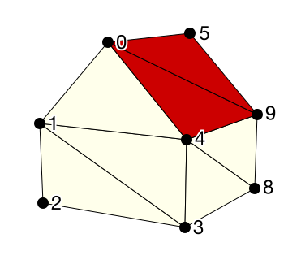

Now let's add color. Let's make the roof red and walls yellow.
Ideally we would associate color with the triangles. We would add $r$, $g$, and $b$ values to each row of the triangle table.
Unfortunately, the design of the GL requires that we instead associate attributes, such as color, with the vertices.
So, each vertex in the table will now have 6 components, $x$, $y$, and $z$, plus $r$, $g$ and $b$.
|  |
|
But there's a problem. Vertex 4, for example, has two colors.